4450C10 FRONT PILLAR (ONE), L/H OR R/H COMPLETE WITH WHEEL HUB - R+R WITH WHEEL REMOVED - CHECK WHEEL GEOMETRY SEPARATELY
- Path
- Procedures > 44 SUSPENSION AND WHEELS > 4450 WHEELS AND HUBS > 4450C FRONT WHEEL HUBS > 4450C10 FRONT PILLAR (ONE), L/H OR R/H COMPLETE WITH WHEEL HUB - R+R WITH WHEEL REMOVED - CHECK WHEEL GEOMETRY SEPARATELY
- Kind
- repair procedure (removal / refitting; the operation number is the code)
- Applies to
- engines: 2.0 JTS, 3.2 V6, 1.9 JTD 16V; all production periods
- Interactive page
- https://sloeber94.github.io/elrnDB-aGt/en/#/125001482
Applies to: engines: 2.0 JTS, 3.2 V6, 1.9 JTD 16V; all production periods
 Removing
Removing
 Refitting
RefittingPosition the vehicle on the ramp
Ensure that the ignition key is in the OFF position, then disconnect the negative battery terminal (-).
Name | Connector | |
|---|---|---|
- | Battery | See A1B BATTERY ( BATTERY NEGATIVE ) |
Remove the wheel arch liner from the wheel housing involved
Proceed with removal
Applies to: engines: 2.0 JTS, 3.2 V6, 1.9 JTD 16V; all production periods
1. Release the front brake caliper flexible pipe from the mounting bracket.
2. Undo the bolts (2a) and move the bracket (2b) complete with brake caliper (2c) without disconnecting the pipe.
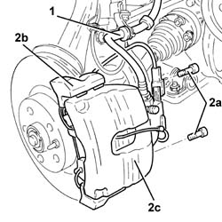
Applies to: engines: 2.0 JTS, 3.2 V6, 1.9 JTD 16V; all production periods
1. Undo bolt (1a) and remove the front wheel rpm sensor (1b) from its seat and move aside after releasing the electrical wiring from its fastenings.
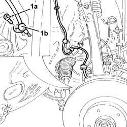
Applies to: engines: 2.0 JTS, 3.2 V6, 1.9 JTD 16V; all production periods
1. Unscrew the pin (1a) and remove the front brake disc (1b).
2. Unscrew nut (2a) and disconnect steering link (2b) from the front wheel strut using tool (2c).
 | Name | Country |
|---|---|---|
2c | Extractor | 1.821.169.000 |
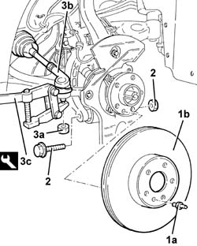
Applies to: engines: 2.0 JTS, 3.2 V6, 1.9 JTD 16V; all production periods
1. Undo the nut (1a) and disconnect the front upper wishbone (1b) from the knuckle using the tool (1c).
| Name | Country |
|---|---|---|
1c | Extractor | 1.821.169.000 |
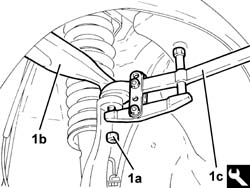
Applies to: engines: 2.0 JTS, 3.2 V6, 1.9 JTD 16V; all production periods
1. Undo the nut (1a) and disconnect the front suspension lower wishbone from the steering knuckle using the tool (1b).
| Name | Country |
|---|---|---|
1b | Extractor | 1.821.169.000 |
2. Remove front knuckle (2a) with wheel hub (2b).
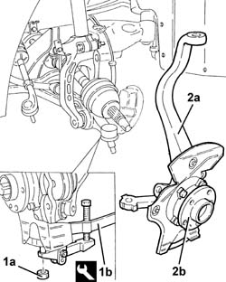
Applies to: engines: 2.0 JTS, 3.2 V6, 1.9 JTD 16V; all production periods
Refitting
Removing1. Refit front knuckle (1a) complete with wheel hub (1b).
2. Connect the front suspension lower wishbone to the front steering knuckle and fix it by tightening the nut to the recommended torque.
 | Fastening | Component | Ø | Value (daNm) |
|---|---|---|---|---|
2 | Nut | FRONT SUSPENSION LOWER LEVER | M14 | (Steering knuckle side) 8.1 ÷ 9.9 |
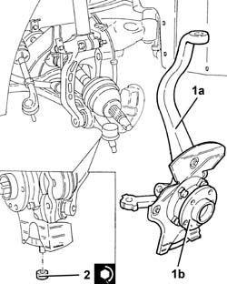
Applies to: engines: 2.0 JTS, 3.2 V6, 1.9 JTD 16V; all production periods
1. Connect the front upper wishbone (1a) to the steering knuckle and fix it tightening the nut (1b) to the recommended torque.
| Fastening | Component | Ø | Value (daNm) |
|---|---|---|---|---|
1b | Nut | FRONT SUSPENSION TOP LEVER | M10 | (Steering knuckle side) 4.3 ÷ 4.7 |
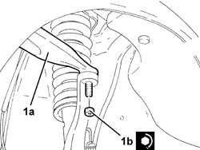
Applies to: engines: 2.0 JTS, 3.2 V6, 1.9 JTD 16V; all production periods
1. Connect the steering link (1a) to the front steering knuckle and fix it tightening the nut (1b) to the recommended torque.
| Fastening | Component | Ø | Value (daNm) |
|---|---|---|---|---|
1b | Nut | ADJUSTABLE STEERING LINKS | M10 | (Front steering knuckle side) 3.2 ÷ 3.9 |
2. Place the front brake disc (2a) back in its housing and fix it tightening the pin (2b) to the recommended torque.
| Fastening | Component | Ø | Value (daNm) |
|---|---|---|---|---|
2b | Pin | FRONT BRAKE DISC. | M8 | (Wheel hub side) 1.0 ÷ 1.4 |
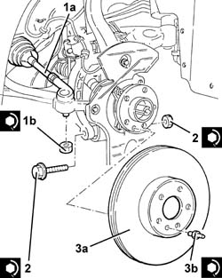
Applies to: engines: 2.0 JTS, 3.2 V6, 1.9 JTD 16V; all production periods
Place the front wheel rpm sensor back in its housing and fix it tightening the bolt to the recommended torque.
| Fastening | Component | Ø | Value (daNm) |
|---|---|---|---|---|
- | Bolt | ABS SYSTEM FRONT WHEEL RPM SENSOR | M6 | 06 10 |
Secure the front wheel rpm sensor electrical wiring.
Applies to: engines: 2.0 JTS, 3.2 V6, 1.9 JTD 16V; all production periods
1. Tighten the nut (1a) fixing the wheel hub to the drive shaft to the recommended torque, using the angle tightening tool (1b).
| Fastening | Component | Ø | Value (daNm) |
|---|---|---|---|---|
1a | Nut | FRONT HUB WITH BEARINGS | M24 | (Driveshaft side 67 74 62 2 |
| Name | Country |
|---|---|---|
1b | Protractor | 1.860.942.000 |
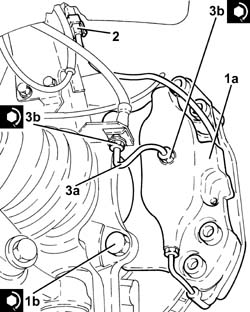
Applies to: engines: 2.0 JTS, 3.2 V6, 1.9 JTD 16V; all production periods
Top up the brake-clutch fluid level
Op. 0010T64 BRAKE AND OR CLUTCH FLUID CHECK LEVEL AND TOP UP AS NECESSARY.
Bleed the air from the hydraulic braking system
Applies to: engines: 2.0 JTS, 3.2 V6, 1.9 JTD 16V; all production periods
Place the wheel arch liner in the wheel housing involved.
Connect the negative (-) battery terminal
Remove the car from the ramps.
It is advisable to check the wheel alignment
Applies to: engines: 2.0 JTS, 1.9 JTD 16V; all production periods
1. Remove the two bevels and undo the nut securing the hub nut to the drive shaft.
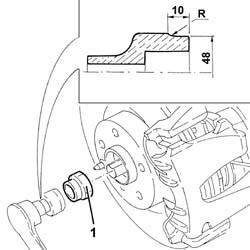
Applies to: engines: 3.2 V6; all production periods
Remove the protective cap on the brake caliper bleed valve.
Connect the collection system (pipe and reservoir) to the bleed valve on the brake caliper.
Operate the brake pedal until the brake-clutch reservoir and pipes are empty.
1. Undo the connectors (1a) and remove the rigid pipe to the brake caliper (1b).
2. Disconnect the electrical connections for the brake pad wear cable.
Name | Connector | |
|---|---|---|
2 | Left brake pad wear sensor switch | See K20 LEFT BRAKE PAD WEAR SENSOR SWITCH ( FRONT ) |
3. Undo the bolts (3a) and remove the front brake caliper (3b) complete with brake pads.
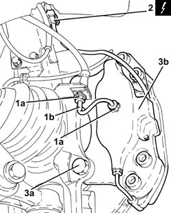
Applies to: engines: 3.2 V6; all production periods
1. Refit the rear brake caliper assembly (1a) complete with pads and tighten the bolts (1b) to the specified torque.
| Fastening | Component | Ø | Value (daNm) |
|---|---|---|---|---|
1b | Bolt | FRONT BRAKE CALIPER ASSEMBLY | M12 |
2. Connect the electrical connection for the brake pad wear cable.
3. Refit the rigid pipe to the brake caliper (3a) in its seating and tighten the connectors (3b) to the specified torque.
| Fastening | Component | Ø | Value (daNm) |
|---|---|---|---|---|
3b | Connector | FITTING FOR PIPE TO CALIPER | M10 | (Brake caliper side) 1.4 ÷1.8 |
| Fastening | Component | Ø | Value (daNm) |
|---|---|---|---|---|
3b | Connector | FITTING FOR PIPE TO CALIPER | M10 | (Flexible pipe side) 1.4 ÷ 1.8 |
Applies to: engines: 2.0 JTS, 1.9 JTD 16V; all production periods
1. Place the bracket (1a) complete with brake caliper (1b) in its seating and tighten the bolts (1c) to the specified torque.
| Fastening | Component | Ø | Value (daNm) |
|---|---|---|---|---|
1c | Bolt | FRONT BRAKE CALIPER BRACKET | M12 | (Front steering knuckle side) 11.1 ÷ 12.3 |
Fit the front brake caliper flexible pipe to the mounting bracket.
Applies to: engines: 3.2 V6; all production periods
1. Tighten the nut (1a) fixing the wheel hub to the drive shaft to the recommended torque, using the angle tightening tool (1b).
| Fastening | Component | Ø | Value (daNm) |
|---|---|---|---|---|
1a | Nut | FRONT HUB WITH BEARINGS | M24 | (Driveshaft side 67 74 41 2 |
| Name | Country |
|---|---|---|
1b | Protractor | 1.860.942.000 |
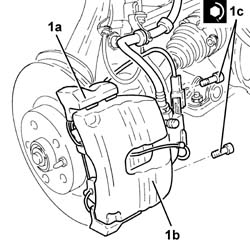
Topics linked from this page (4)
- 0010T64 BRAKE AND OR CLUTCH FLUID CHECK LEVEL AND TOP UP AS NECESSARY
- 0010T65 HYDRAULIC BRAKE SYSTEM BLEED AIR
- 4450A10 FRONT WHEEL GEOMETRY - CHECK USING OPTICAL EQUIPMENT - INCLUDES FRONT WHEEL TOW-IN ADJUSTMENT IF NECESSARY
- 7055B54 UNDER-ENGINE GUARD - R R
Topics that link to this page (4)
- 4410B40 LOWER WISHBONE (WITH BALLJOINT) OF LEFT OR RIGHT FRONT SUSPENSION (ONE) - R+R -CHECK WHEEL GEOMETRY SEPARATELY
- 4450C14 FRONT PILLARS (TWO) COMPLETE WITH WHEEL HUB - R+R WITH WHEELS REMOVED - CHECK WHEEL GEOMETRY SEPARATELY
- 4450C28 FRONT WHEEL HUB - R R
- 4450C32 ONE FRONT WHEEL HUB BEARING, LH OR RH - REPLACE